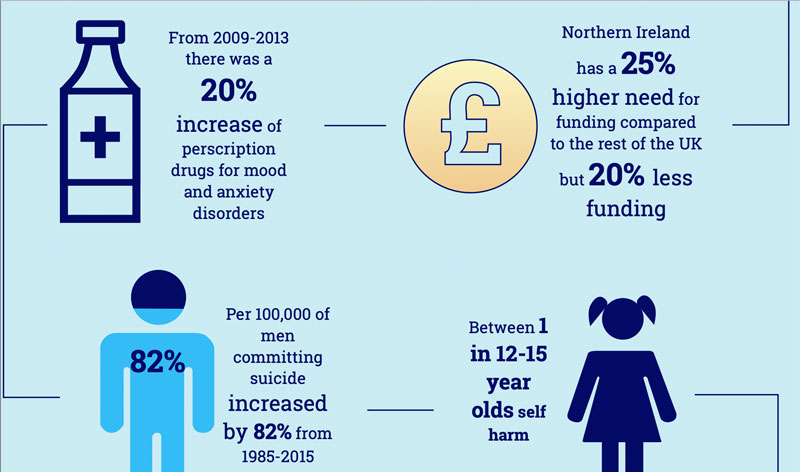
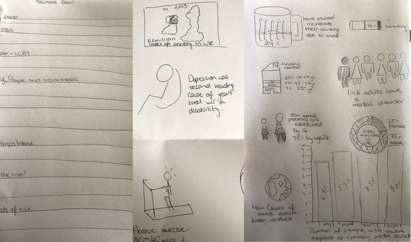
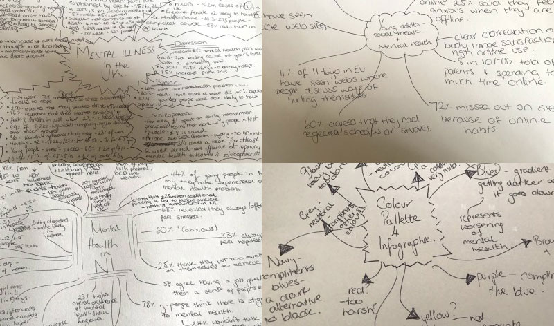

Mental Health in the UK
Sketch
Reserach/Illustration & Content Design

The Process
I did in depth research into Mental Health in the UK and focused on some key factors as well as zoning in on Mental Health Statistics in Northern Ireland. I wanted to create a consistent, simple and timeless infographic that appropriatley addressed sensitive subject matters.I looked at how others approached infographics such as official government posters for Mental Health.


The Final Product
I created a simple Infographic based on official statistics in the UK and Northern Ireland and created graphics to illustrate the message.